TRABAJO FIN DE CICLO
CURSO 2025 / 2026
CoFound: Plataforma móvil de networking para emprendedores con sistema de matching basado en habilidades complementarias e inteligencia artificial generativa
CICLO FORMATIVO DE GRADO SUPERIOR
DESARROLLO DE APLICACIONES MULTIPLATAFORMA
Resumen
El presente Trabajo Fin de Ciclo aborda el diseño y desarrollo de CoFound, una plataforma móvil multiplataforma orientada al networking entre emprendedores. El proyecto responde a una necesidad detectada mediante encuesta a 26 usuarios potenciales: la dificultad para encontrar cofundadores y colaboradores con habilidades complementarias en el ecosistema emprendedor español. La solución consiste en una aplicación móvil construida con React Native y Expo, conectada a una API REST desarrollada con Node.js y Express, persistencia en PostgreSQL y orquestación mediante Docker Compose.
El sistema incorpora un algoritmo propio de compatibilidad porcentual entre habilidades ofrecidas y buscadas, una experiencia de descubrimiento de perfiles tipo swipe, mensajería privada potenciada por IA generativa (Groq con LLama 3.3-70B) y un modelo freemium con suscripción premium a 4,99 €/mes. La memoria recoge el estudio de mercado, la elección de soluciones bajo filosofía KISS, la valoración económica, el análisis de viabilidad, el plan de puesta en marcha y la evaluación funcional del MVP entregado.
Palabras clave:
Aplicación móvil, Emprendimiento, Inteligencia artificial, Matching, Networking.
Abstract:
This Final Project addresses the design and development of CoFound, a cross-platform mobile networking solution for entrepreneurs. The project responds to a need identified through a survey of 26 potential users: the difficulty of finding cofounders with complementary skills within the Spanish startup ecosystem. The solution is a mobile application built with React Native and Expo, connected to a REST API developed with Node.js and Express, persistence on PostgreSQL and orchestration through Docker Compose.
The system incorporates a custom compatibility algorithm between offered and required skills, a Tinder-style discovery experience, private messaging enhanced with generative AI (Groq with LLama 3.3-70B) and a freemium business model with a premium subscription at €4.99/month. The report includes market study, technical choices following KISS philosophy, cost analysis, project viability, deployment plan and functional evaluation of the delivered MVP.
Key Words:
Artificial intelligence, Entrepreneurship, Matching, Mobile application, Networking.
1. INTRODUCCIÓN
El ecosistema emprendedor español vive un momento de expansión sostenida. Según el informe GEM España 2023-2024 [6], la tasa de actividad emprendedora alcanzó el 7,2 % de la población adulta, con un crecimiento marcado en proyectos de base tecnológica liderados por personas menores de 35 años. Sin embargo, ese mismo informe identifica como una de las principales barreras para emprender la dificultad para encontrar socios y colaboradores con perfiles complementarios.
De forma paralela, las herramientas digitales de networking profesional, lideradas por LinkedIn, han demostrado ser eficaces para encontrar empleo o construir una marca personal, pero son percibidas como insuficientes para el momento concreto en el que un emprendedor busca un cofundador. Esta distancia entre la oferta existente y la necesidad real ha sido confirmada en este TFC mediante una encuesta a 26 usuarios potenciales, en la que el 64 % se consideran personas con mentalidad emprendedora y un 84,6 % afirma que le resultaría útil una aplicación específica para conectar con emprendedores cercanos según intereses y habilidades.
El presente Trabajo Fin de Ciclo plantea como solución CoFound, una aplicación móvil multiplataforma que conecta emprendedores y profesionales técnicos en función de la complementariedad de sus habilidades. Cada usuario registra las capacidades que ofrece (por ejemplo, desarrollo web, marketing digital, finanzas) y las que busca en un colaborador. Un algoritmo propio cruza esos vectores y presenta los perfiles ordenados por afinidad porcentual en un feed tipo swipe. Cuando dos usuarios se dan like mutuamente se genera un match y se habilita un chat privado en el que la IA generativa de Groq (LLama 3.3-70B) puede generar respuestas contextuales para facilitar la conversación. La aplicación incorpora un modelo freemium con plan Premium a 4,99 €/mes, galería de fotos por perfil, sistema completo de moderación (bloqueo y denuncia) y experiencia visual minimalista en tema oscuro siguiendo principios consolidados de usabilidad [11][14] y patrones de interfaz móvil reconocidos [20].
La elección de este proyecto responde a tres motivaciones complementarias. En primer lugar, una motivación personal: el autor tiene un interés directo por el emprendimiento digital y ha vivido en primera persona la dificultad de encontrar perfiles afines fuera del entorno académico. En segundo lugar, una motivación académica: el TFC permite trabajar de forma integrada las competencias adquiridas en los módulos de Programación de Servicios y Procesos (PSP) y Programación de Dispositivos Móviles (PMDM), de modo que el resultado final sea representativo del perfil profesional del título de Técnico Superior en Desarrollo de Aplicaciones Multiplataforma. En tercer lugar, una motivación profesional: el desarrollo extremo a extremo de un producto móvil con backend propio, base de datos relacional, integración con servicios de IA y despliegue en producción es el tipo de proyecto que mejor posiciona al alumno frente al mercado laboral, ya que cubre el espectro completo de un perfil full-stack mobile.
Desde el punto de vista de los contenidos del título, CoFound permite profundizar en concurrencia y servicios web (PSP), en arquitectura cliente-servidor, en seguridad de aplicaciones (autenticación, hashing, validación), en bases de datos relacionales, en interfaces móviles nativas, navegación condicional, persistencia local y consumo de API. Además, incorpora elementos diferenciales que enriquecen el perfil técnico: contenedorización con Docker, despliegue continuo en una plataforma cloud (Railway) e integración con servicios de IA generativa.
El objetivo general del proyecto es diseñar, desarrollar, desplegar y documentar una aplicación móvil multiplataforma —junto a su backend y su base de datos— que facilite la conexión entre emprendedores en función de la complementariedad de sus habilidades, integrando un sistema de mensajería con asistencia de inteligencia artificial generativa. Como objetivos específicos se plantean: realizar un estudio de mercado que identifique a los competidores directos e indirectos, implementar un backend RESTful seguro con autenticación basada en JWT [8], diseñar una base de datos relacional normalizada en PostgreSQL [16], desarrollar la aplicación móvil con React Native y Expo [12], empaquetar todos los servicios en contenedores Docker para garantizar la reproducibilidad del entorno, desplegar el backend en producción y, por último, realizar la valoración económica, el análisis de viabilidad y el plan de puesta en marcha del proyecto como iniciativa empresarial.
2. ANÁLISIS
Antes de seleccionar la solución técnica se ha analizado el entorno en el que va a competir CoFound y las posibles alternativas, propietarias y libres, que podrían cubrir las necesidades del proyecto. Ese análisis se completa con la valoración y elección de la pila tecnológica final, justificada bajo la filosofía KISS (Keep It Simple, Stupid).
2.1 Estudio de mercado
Demanda detectada
Para validar la existencia de una necesidad real se ha realizado una encuesta online a 26 usuarios potenciales (estudiantes y jóvenes profesionales). Los datos más relevantes son los siguientes: el 53,8 % de los encuestados tiene entre 19 y 22 años y el 30,8 % entre 23 y 26, lo que confirma que el público objetivo coincide con la franja de edad inicialmente prevista; el 64 % se consideran personas con mentalidad emprendedora y el resto manifiesta interés pero está empezando; las dificultades más citadas para emprender son la falta de contactos (30,8 %) y la falta de tiempo (30,8 %), seguidas de la falta de conocimientos (19,2 %); por último, el 84,6 % afirma que le resultaría útil una aplicación para conectar con emprendedores cercanos según intereses y habilidades. Estos resultados permiten concluir que existe un problema bien identificado y una disposición clara a probar una herramienta digital específica para resolverlo, validándose así la oportunidad de mercado.
Competidores directos
Se consideran competidores directos aquellas plataformas cuyo propósito coincide con el de CoFound: conectar emprendedores entre sí.
- Shapr. Aplicación móvil de networking profesional con un enfoque de matching tipo Tinder. Centrada principalmente en mercado anglosajón, su uso en España es minoritario y no está localizada al castellano. No incorpora un algoritmo basado en habilidades complementarias, sino en intereses generales.
- CoFoundersLab (ahora StartHawk). Plataforma web orientada a la búsqueda de socios para startups. Su experiencia es más cercana a un portal clásico que a una aplicación móvil moderna, carece de mensajería con asistencia inteligente y su catálogo de habilidades es muy limitado.
- Tinder Social / Bumble Bizz. Modos profesionales de aplicaciones de citas que permiten establecer contacto con fines laborales. Su diseño no está pensado para la búsqueda de cofundadores ni para representar habilidades técnicas estructuradas.
Competidores indirectos
- LinkedIn. Es la red profesional dominante. Su fortaleza está en perfiles laborales detallados, pero su mensajería es fría y su búsqueda de personas no facilita el cruce de habilidades complementarias. Para encontrar un cofundador, el usuario debe escribir mensajes en frío con tasas de respuesta bajas.
- Discord y Telegram. Existen comunidades de emprendedores en ambas plataformas. Funcionan como foros, sin sistema estructurado de perfiles ni cálculo de compatibilidad. Requieren un esfuerzo elevado para identificar a la persona adecuada dentro de cientos de miembros.
- Eventos presenciales y aceleradoras. Lanzadera, Demium, Wayra, Plug and Play o eventos como South Summit son canales tradicionales de networking emprendedor, pero suponen un coste de tiempo y, en algunos casos, de dinero. Su alcance es limitado por geografía y agenda.
Posicionamiento de CoFound
El análisis revela que existe un hueco competitivo claro: una aplicación mobile-first, en español, centrada específicamente en el cruce objetivo de habilidades ofrecidas y buscadas, con una experiencia de usuario moderna tipo swipe. La definición de la propuesta sigue una metodología de design thinking [1] y de service design [19] a partir de las necesidades detectadas en la encuesta. Ese hueco es el que ocupa CoFound.
| Criterio |
LinkedIn |
Shapr |
CoFoundersLab |
Discord/Telegram |
CoFound |
| Específico para emprendedores | No | Parcial | Sí | Parcial | Sí |
| Mobile-first | Parcial | Sí | No | Sí | Sí |
| Localización en español | Sí | No | No | Sí | Sí |
| Algoritmo de compatibilidad por skills | No | No | Limitado | No | Sí |
| Mensajería con IA | No | No | No | No | Sí |
| Modelo freemium accesible | Sí | Sí | Sí | Gratuito | Sí |
2.2 Elección de soluciones
Una vez identificado el hueco de mercado se han evaluado distintas alternativas técnicas siguiendo la filosofía KISS y un enfoque lean de validación temprana [18]: priorizar tecnologías ampliamente adoptadas, con buena documentación, gratuitas o de coste muy bajo y con una curva de aprendizaje razonable para un alumno de DAM. Para cada componente se han comparado al menos dos opciones representativas, una propietaria y otra libre, y se ha justificado la elección final.
Cliente móvil
| Opción | Tipo | Pros | Contras | Decisión |
|---|
| React Native + Expo |
Libre |
Un solo código para iOS, Android y web; ecosistema maduro; Expo simplifica builds y publicación; gran comunidad [12]. |
Algunas APIs nativas requieren development build. |
ELEGIDA |
| Flutter |
Libre |
Excelente rendimiento; Hot Reload muy estable. |
Lenguaje Dart, menos transferible al ecosistema web; menos cuotas en el mercado laboral local. |
Descartada |
| Desarrollo nativo (Swift + Kotlin) |
Libre |
Máximo rendimiento. |
Duplicación del esfuerzo; inviable para un TFC en plazo. |
Descartada |
Se elige React Native con Expo y TypeScript porque permite reutilizar conocimientos de JavaScript del módulo de DWES, comparte tipado end-to-end con el backend y, gracias a Expo, evita configuración nativa compleja. La aplicación final corre en Android, iOS y web sin cambios de código.
Backend
| Opción | Tipo | Pros | Contras | Decisión |
|---|
| Node.js + Express + TypeScript |
Libre |
Asincronía no bloqueante apta para muchas peticiones I/O; ecosistema npm enorme; tipado compartido con el cliente [4]. |
Modelo de un solo hilo (mitigado por la naturaleza I/O del proyecto). |
ELEGIDA |
| Spring Boot (Java) |
Libre |
Muy robusto en producción. |
Mayor verbosidad; arranque más lento; obliga a duplicar tipos respecto al cliente. |
Descartada |
| Firebase / Supabase como BaaS |
Propietaria/Libre |
Reduce el esfuerzo de backend. |
Menos control y aprendizaje; oculta los contenidos clave del módulo PSP. |
Descartada |
Se elige Express con TypeScript ejecutado mediante tsx, que permite arrancar el servidor sin compilación previa y agiliza el ciclo de desarrollo. Esta decisión también permite cubrir explícitamente los contenidos de PSP: gestión de concurrencia, programación cliente-servidor, hilos, sockets HTTP.
Persistencia
| Opción | Tipo | Pros | Contras | Decisión |
|---|
| PostgreSQL 16 |
Libre |
SGBD relacional ACID; extensiones potentes (pgcrypto, JSONB, búsqueda full-text); sin coste de licencia [16]. |
Configuración inicial más compleja que SQLite. |
ELEGIDA |
| MongoDB |
Libre/Propietaria |
Flexible para datos no estructurados. |
Sin garantías ACID por defecto; el modelo de matches y mensajes es claramente relacional. |
Descartada |
| SQLite |
Libre |
Sin servidor. |
No apto para concurrencia real ni despliegue en producción multiusuario. |
Descartada |
Inteligencia artificial generativa
| Opción | Tipo | Pros | Contras | Decisión |
|---|
| Groq + LLama 3.3-70B |
Propietaria con free tier |
Latencia muy baja (decenas de ms); plan gratuito generoso para MVP; modelo de calidad para conversación en español [7]. |
Coste por token a partir de cierto volumen. |
ELEGIDA |
| OpenAI (GPT-4 / GPT-4o) |
Propietaria |
Calidad de referencia. |
Mayor coste por token; latencia mayor. |
Reservada como alternativa |
| LLama autoalojada |
Libre |
Sin coste por token. |
Requiere GPU dedicada; coste de infraestructura inviable para un MVP. |
Descartada |
Infraestructura y despliegue
Se ha optado por Docker Compose para orquestar localmente los tres servicios necesarios (PostgreSQL, API y bundler de Expo). El despliegue de producción del backend se realiza en Railway, plataforma cloud con plan inicial gratuito que permite desplegar contenedores con base de datos PostgreSQL gestionada, certificado TLS automático y dominio público. La aplicación móvil se distribuye en su fase MVP a través de Expo Go, lo que evita publicar en las tiendas durante el desarrollo.
Resumen de la pila elegida
| Capa | Tecnología | Versión |
|---|
| Aplicación móvil | React Native + Expo SDK + TypeScript | RN 0.76 / Expo 52 / TS 5.8 |
| Navegación | React Navigation (Native Stack + Bottom Tabs) | 7.x |
| Almacenamiento local | AsyncStorage | 2.1 |
| Cliente HTTP | Axios | 1.8 |
| Backend | Node.js + Express + TypeScript | Node 22 / Express 4.21 / TS 5.8 |
| Autenticación | jsonwebtoken + bcryptjs | 9.0 / 3.0 |
| Validación | Zod | 3.24 |
| Seguridad | Helmet + CORS | 8.1 / 2.x |
| Base de datos | PostgreSQL + driver pg | 16 / 8.13 |
| IA generativa | Groq SDK + LLama 3.3-70B | 1.1 |
| Infraestructura local | Docker + Docker Compose | — |
| Despliegue | Railway (backend + PostgreSQL) | — |
| Control de versiones | Git + GitHub | — |
3. VALORACIÓN ECONÓMICA
Esta sección detalla los costes estimados que supondría desarrollar y mantener CoFound como producto real, considerando una empresa de nueva creación con un equipo mínimo. Los importes están expresados en euros y referidos al ejercicio 2026 en territorio español. Las fuentes de los precios son las páginas oficiales de los proveedores y las tarifas del Convenio Estatal de Empresas de Consultoría (BOE-A-2022-4019) actualizado a 2026.
3.1 Hardware
El proyecto, al ser un servicio digital, no requiere hardware industrial. Se contemplan los equipos imprescindibles para el desarrollo y las pruebas multiplataforma:
| Concepto | Cantidad | Precio unitario | Vida útil | Coste anual |
|---|
| Portátil de desarrollo (16 GB RAM, SSD 512 GB, i7/Ryzen 7) | 1 | 1.500,00 € | 4 años | 375,00 € |
| Smartphone Android de pruebas (gama media) | 1 | 300,00 € | 3 años | 100,00 € |
| iPhone de pruebas (gama media, segunda mano) | 1 | 450,00 € | 3 años | 150,00 € |
| Monitor secundario 24" | 1 | 180,00 € | 5 años | 36,00 € |
| Periféricos (teclado, ratón, auriculares) | 1 | 120,00 € | 3 años | 40,00 € |
| TOTAL HARDWARE (amortización anual) | 701,00 € |
| Inversión inicial total | 2.550,00 € |
El backend no requiere servidor físico propio: se contrata como servicio gestionado (apartado 3.2), por lo que no se incluye hardware de servidor.
3.2 Licencias
Una de las ventajas de la pila elegida es que la práctica totalidad del software es libre y gratuito. Los costes recurrentes se concentran en servicios cloud y cuentas de desarrollador en tiendas.
| Concepto | Proveedor | Modalidad | Coste anual |
|---|
| SO y herramientas (Node.js, Express, PostgreSQL, Docker, RN, Expo, VS Code, Git) | Comunidad | Open source | 0,00 € |
| Apple Developer Program | Apple | Suscripción anual | 99,00 € |
| Google Play Console | Google | Pago único 25 $ amortizado a 5 años | 5,00 € |
| Hosting backend + PostgreSQL gestionado | Railway (Hobby) | ≈ 20 €/mes | 240,00 € |
| Almacenamiento de imágenes | Cloudinary | Free tier MVP, escalado a 89 $/año | 90,00 € |
| Dominio cofound.app | Namecheap / GoDaddy | Anual | 15,00 € |
| Email transaccional | Resend | Free tier hasta 3.000 emails/mes | 0,00 € |
| API de Groq (LLama 3.3-70B) | Groq | Free tier hasta 14.400 req/día | 0,00 € |
| GitHub | GitHub | Plan Free para repos privados | 0,00 € |
| Suite ofimática y diseño | Figma, Notion | Free tier | 0,00 € |
| TOTAL LICENCIAS Y SERVICIOS | 449,00 € |
El bajo coste de licencias es un punto a favor del proyecto: su operación anual no exige una inversión recurrente significativa hasta superar volúmenes de uso elevados, lo que es coherente con la fase MVP.
3.3 Personal
El equipo mínimo para llevar el producto a un MVP estable es de una sola persona en perfil full-stack mobile. Para una versión avanzada se incorporarían perfiles complementarios. Los salarios brutos anuales se han calculado conforme al Convenio Estatal de Empresas de Consultoría 2026 y se han incrementado en un 32 % en concepto de Seguridad Social a cargo de la empresa.
| Perfil | Dedicación MVP | Tarifa bruta | Coste empresa MVP |
|---|
| Programador/a Full-stack (Nivel 2 Convenio) | 7 semanas a 40 h/sem | 22,00 €/h | 8.131,20 € |
| Diseñador/a UX-UI (puntual) | 40 h | 28,00 €/h | 1.478,40 € |
| Tester / QA (puntual) | 30 h | 18,00 €/h | 712,80 € |
| TOTAL PERSONAL DESARROLLO MVP | 10.322,40 € |
Para un escenario empresarial estable a 12 meses, el personal mínimo necesario para mantener el producto en funcionamiento, atender soporte y evolucionar nuevas funcionalidades sería:
| Perfil | Salario bruto anual | Coste empresa anual |
|---|
| Programador/a Full-stack (1 persona) | 28.000,00 € | 36.960,00 € |
| Soporte y community (½ jornada) | 12.000,00 € | 15.840,00 € |
| TOTAL PERSONAL ANUAL ESCENARIO ESTABLE | 52.800,00 € |
Costes de mantenimiento
Una vez en producción, el proyecto incurre en gastos recurrentes específicos de mantenimiento, separados del desarrollo:
| Concepto | Coste anual |
|---|
| Hosting y BD (Railway, plan creciente con usuarios) | 240,00 € |
| Almacenamiento de fotos de perfil | 90,00 € |
| Dominio y certificados | 15,00 € |
| Cuentas en tiendas (Apple + Google) | 104,00 € |
| Backups y snapshots | 60,00 € |
| Monitorización (Sentry plan Team) y logs | 312,00 € |
| Coste estimado de IA al escalar (50 % de usuarios premium activos) | 600,00 € |
| Mantenimiento correctivo (10 % del coste de personal) | 5.280,00 € |
| TOTAL MANTENIMIENTO ANUAL | 6.701,00 € |
Resumen económico
| Concepto | Inversión inicial (MVP) | Coste anual recurrente |
|---|
| Hardware | 2.550,00 € | 701,00 € |
| Licencias y servicios | 120,00 € | 449,00 € |
| Personal | 10.322,40 € | 52.800,00 € |
| Mantenimiento | — | 6.701,00 € |
| TOTAL | 12.992,40 € | 60.651,00 € |
La inversión inicial necesaria para desarrollar y publicar el MVP de CoFound asciende aproximadamente a 13.000 €. El coste de operación de la empresa en régimen estable, una vez lanzado el producto, se sitúa en torno a los 60.000 € anuales, incluyendo el salario completo de un perfil full-stack y los servicios cloud necesarios.
4. VIABILIDAD DEL PROYECTO
La viabilidad de CoFound se evalúa desde tres dimensiones: técnica, económica y de mercado. Se analizan, además, los principales riesgos, las proyecciones de ingresos y los beneficios objetivos que aporta el proyecto.
Análisis de riesgos
| Riesgo | Probabilidad | Impacto | Plan de mitigación |
|---|
| Dependencia de la API de Groq (corte o subida de precios) |
Media |
Alto |
Capa de abstracción del servicio LLM en backend; alternativa OpenAI documentada y probada; cache de respuestas para reducir consumo. |
| Baja masa crítica de usuarios al lanzamiento |
Alta |
Alto |
Lanzamiento focalizado en una ciudad (Madrid) con campaña en universidades y colaboraciones con eventos como South Summit y Demium. |
| Cambios en políticas de tiendas (App Store, Google Play) |
Media |
Medio |
Compras dentro de la app delegadas a RevenueCat; términos y privacidad alineados con guías de cada tienda. |
| Filtración de datos personales |
Baja |
Muy alto |
Hashing de contraseñas (bcryptjs), JWT [8], Helmet, validación Zod, principio de mínimo privilegio en BD, backups cifrados; controles alineados con OWASP Top Ten [15]. |
| Conducta abusiva entre usuarios |
Media |
Alto |
Sistema de bloqueo, denuncia y eliminación automática implementado; revisión humana de denuncias; términos de uso explícitos. |
| Coste cloud creciente con escalado |
Media |
Medio |
Arquitectura contenedorizada portable (Docker) que permite migrar entre proveedores; monitorización de costes mensual. |
| Cumplimiento RGPD insuficiente |
Baja |
Muy alto |
Política de privacidad, derecho al olvido implementado a nivel BD, registro de actividad y consentimientos explícitos, conforme al RGPD [3] y la LOPDGDD [10]. |
Modelo de ingresos y proyecciones
El modelo de negocio es freemium con suscripción Premium mensual a 4,99 € y anual a 39,99 €. Los ingresos potenciales se han calculado sobre tres escenarios para los primeros 12 meses tras el lanzamiento, asumiendo: una población objetivo (TAM) de 2,1 millones de personas entre 22 y 40 años con interés emprendedor en España [6]; un SAM de 200.000 personas con penetración inicial en 8 ciudades; un SOM de 5.000 usuarios registrados en el primer año; y una tasa de conversión a Premium del 3 % (referencia conservadora del sector dating/networking, según App Annie 2023).
| Escenario | Usuarios año 1 | % Premium | Ingresos brutos anuales |
|---|
| Pesimista | 2.000 | 2 % | 2.397,60 € |
| Realista | 5.000 | 3 % | 8.991,00 € |
| Optimista | 12.000 | 4 % | 28.771,20 € |
El primer año no se cubre el coste de operación (~60.000 €/año). El proyecto debe entenderse como una startup en validación, financiada mediante capital semilla y subvenciones, con objetivo de break-even en el año 3. La métrica clave durante los primeros meses no son los ingresos, sino la retención y la conversión a match, que validan el ajuste producto-mercado.
Beneficios objetivos e interés real
Más allá de los ingresos potenciales, CoFound aporta beneficios objetivos a tres niveles. Para los usuarios: reducción del tiempo necesario para encontrar un cofundador desde el orden de meses (a través de eventos y redes generales) al orden de días o semanas, mediante un sistema de matching estructurado. Para el ecosistema emprendedor: aumento del número de proyectos puestos en marcha al disminuir la barrera de la "soledad del emprendedor". Para el alumno y futuro profesional: portfolio sólido que demuestra dominio integral de un producto digital, con un peso curricular muy superior al de prácticas aisladas.
El interés real del proyecto está respaldado por la encuesta inicial (84,6 % de los participantes lo consideran útil), por el crecimiento sostenido del emprendimiento digital en España y por el momento favorable que vive la integración de modelos de IA generativa en productos de consumo. Se concluye que el proyecto es viable técnicamente, económicamente sostenible a partir del año 2-3 con financiación inicial adecuada y justificado por la demanda.
5. PUESTA EN MARCHA
Para llevar CoFound del prototipo a una empresa real es necesario abordar trámites legales, recursos humanos, prevención de riesgos laborales, análisis medioambiental, planificación de la inversión y búsqueda de financiación.
Trámites burocráticos
Se ha optado por la forma jurídica de Sociedad Limitada (S.L.) por tres motivos: separa el patrimonio personal del empresarial, ofrece mejor imagen frente a inversores y permite incorporar nuevos socios sin renegociar la forma jurídica. Los trámites necesarios son:
- Reserva del nombre en el Registro Mercantil Central (3 días hábiles aprox.).
- Apertura de cuenta bancaria con depósito mínimo de 3.000 € (capital social).
- Otorgamiento de la escritura pública ante notario.
- Solicitud del NIF provisional en Hacienda (modelo 036).
- Inscripción en el Registro Mercantil Provincial.
- Solicitud del NIF definitivo.
- Alta en el Régimen Especial de Trabajadores Autónomos (RETA) del administrador.
- Alta en el Impuesto sobre Actividades Económicas (IAE), epígrafe 763 "Programación, consultoría y otras actividades relacionadas con la informática".
- Comunicación de apertura del centro de trabajo a la Consejería de Empleo correspondiente.
- Registro de la marca CoFound en la OEPM (Oficina Española de Patentes y Marcas).
- Registro de la actividad de tratamiento de datos personales conforme al RGPD [3] y la LOPDGDD [10].
El coste estimado de estos trámites, incluyendo notaría, gestor y tasas, es de 1.200 €, además de los 3.000 € del capital social mínimo.
Recursos Humanos
En la fase de lanzamiento, la estructura es deliberadamente reducida para minimizar el burn-rate:
| Puesto | Régimen | Funciones |
|---|
| CEO + CTO (fundador) | RETA | Estrategia, desarrollo del producto, atención a inversores. |
| Programador/a Full-stack | Régimen General | Desarrollo, soporte técnico, despliegue continuo. |
| Soporte y community manager (½ jornada) | Régimen General | Atención al usuario, redes sociales, denuncias, contenido. |
| Asesoría laboral, fiscal y RGPD | Servicio externo | Cumplimiento legal y fiscal mensual. |
La política de selección prioriza el teletrabajo, lo que reduce los costes de oficina y amplía el pool de candidatos. Se aplicará el convenio del sector de consultoría TIC.
Prevención de Riesgos Laborales
El servicio se presta íntegramente desde puestos de trabajo de oficina, lo que sitúa la actividad en un riesgo bajo, principalmente ergonómico y psicosocial. Se contempla la contratación de un Servicio de Prevención Ajeno (SPA) que realice la evaluación inicial y el plan de prevención; la dotación de equipo ergonómico mínimo en los puestos de trabajo (silla regulable, monitor a la altura de los ojos, soporte para portátil, iluminación adecuada); la formación obligatoria en uso de pantallas de visualización de datos, conforme al Real Decreto 488/1997 [13]; pausas activas y horario flexible, junto a una política explícita de desconexión digital fuera de jornada (Ley Orgánica 3/2018) [10]; reconocimientos médicos anuales voluntarios para la plantilla; y un protocolo frente a riesgos psicosociales y de acoso laboral, documentado en el plan de prevención. El coste anual de este servicio se estima en 600 €.
Análisis medioambiental
CoFound es un servicio digital, por lo que su impacto ambiental directo es muy bajo. No obstante, sí existe un impacto indirecto en forma de consumo eléctrico de los centros de datos donde se aloja el backend y la base de datos. Las medidas previstas son:
- Selección de proveedores cloud comprometidos con el uso de energías renovables (Railway opera sobre la infraestructura de Google Cloud, neutra en carbono desde 2007).
- Optimización del backend para reducir el número de peticiones innecesarias (uso de paginación, caching, índices de BD).
- Política de byte budget en la app móvil: tamaño del bundle controlado, imágenes optimizadas y compresión WebP donde sea posible, lo que reduce el ancho de banda consumido por usuario.
- Eliminación periódica de cuentas inactivas (ahorro de almacenamiento) tras notificación al usuario, conforme a RGPD.
- Política de gestión de residuos electrónicos: recogida selectiva de los equipos al final de su vida útil mediante un gestor autorizado (R.D. 110/2015 sobre RAEE).
- Cero papel: facturación electrónica obligatoria, contratos firmados digitalmente.
Necesidades de inversión
La inversión inicial necesaria para arrancar la empresa, considerando los apartados anteriores, queda como sigue:
| Concepto | Importe |
|---|
| Capital social mínimo | 3.000,00 € |
| Trámites de constitución | 1.200,00 € |
| Hardware | 2.550,00 € |
| Software, dominios y licencias (año 1) | 449,00 € |
| Personal del MVP | 10.322,40 € |
| Marketing de lanzamiento | 3.000,00 € |
| Asesoría y servicio de prevención (año 1) | 1.800,00 € |
| Colchón de tesorería (3 meses de operación) | 15.000,00 € |
| TOTAL INVERSIÓN INICIAL | 37.321,40 € |
Recursos propios y ajenos. Ayudas y subvenciones
La financiación combina recursos propios (aportación del fundador en concepto de capital social, 3.000 €, y ahorros adicionales por valor aproximado de 7.000 €) y recursos ajenos (préstamo participativo, líneas ICO, capital semilla y, posiblemente, business angels).
Se han identificado las siguientes ayudas y subvenciones específicas para emprendedores tecnológicos en España, vigentes en 2026:
- ENISA Jóvenes Emprendedores: préstamos participativos de entre 25.000 € y 75.000 € para empresas de menos de 24 meses, con interés vinculado a beneficios y carencia de hasta 5 años. Compatible con el perfil del proyecto.
- ENISA Emprendedores: préstamos de hasta 300.000 € para empresas de menos de 24 meses con producto innovador.
- CDTI Neotec: ayuda para empresas innovadoras de base tecnológica, hasta el 70 % del presupuesto con un mínimo de 175.000 €.
- Tarifa plana de autónomos: cuota reducida de 80 €/mes durante los primeros 12 meses (Ley 6/2017) [9].
- Bonificaciones a la contratación: jóvenes menores de 30 años, primer empleo y contratos indefinidos.
- Lanzadera y Demium: aceleradoras privadas que aportan inversión semilla (40.000 – 100.000 €) a cambio de equity, además de mentoría, espacio de trabajo y acceso a inversores.
- Kit Digital y Kit Consulting (fondos Next Generation EU): aplicables a procesos internos de digitalización (CRM, ciberseguridad).
- Subvenciones autonómicas: programas como "Madrid Emprende" o "Startup Andalucía" para empresas de base tecnológica.
El plan de financiación previsto consiste en una aportación inicial del fundador (10.000 €), un préstamo ENISA Jóvenes Emprendedores (40.000 €) como vehículo principal —dado su carácter participativo y largos plazos de carencia—, la entrada en un programa de aceleración como Lanzadera o Demium en el segundo semestre, para sumar mentoría e inversión adicional (aproximadamente 50.000 €), y una próxima ronda seed con business angels al final del año 1 si la métrica de retención valida el producto.
6. EVALUACIÓN FUNCIONAL
Esta sección demuestra que el MVP entregado cumple las metas funcionales propuestas y describe las herramientas utilizadas para verificarlo. La aplicación está disponible como prototipo ejecutable mediante Expo Go conectado al backend desplegado en Railway.
Metas propuestas y verificación
Para cada requisito funcional declarado en la especificación se ha verificado su comportamiento real en la aplicación:
| ID | Requisito | Estado | Verificación |
|---|
| RF01 | Registro seguro | ✓ | Validación cliente y servidor con Zod; usuarios duplicados rechazados; password hasheado en BD. |
| RF02 | Inicio de sesión con JWT | ✓ | Token devuelto y persistido en AsyncStorage; rutas protegidas validan firma HS256. |
| RF03 | Wizard de perfil | ✓ | Cuatro pantallas con barra de progreso y validación por paso. |
| RF04 | Feed de descubrimiento | ✓ | Carga inicial < 600 ms; perfiles ordenados por compatibilidad descendente. |
| RF05 | Like / Pass | ✓ | POST /api/matches/like y registro persistente en user_likes. |
| RF06 | Notificación de match | ✓ | Modal "¡Es un Match!" con foto, deshacer y abrir chat. |
| RF07 | Chat con IA | ✓ | Auto-respuesta de Groq LLama 3.3-70B en < 2 s con contexto de perfil. |
| RF08 | Edición de perfil | ✓ | PATCH /api/profile; cambios reflejados en BD y caché. |
| RF09 | Galería de fotos | ✓ | Hasta 6 fotos con sort_order; validación tamaño y tipo MIME. |
| RF10 | Filtro por ubicación (Premium) | ✓ | Query ?location= aplica WHERE en discovery. |
| RF11 | Suscripción Premium simulada | ✓ | Flujo Pricing → Checkout → Success funcional con tarjeta o PayPal simulados. |
| RF12 | Likes ilimitados Premium / 5 free | ✓ | Límite verificado en backend con contador diario por usuario. |
| RF13 | Persistencia de sesión | ✓ | Tras cerrar y reabrir, el usuario mantiene sesión hasta caducidad del token. |
| RF14 | Moderación | ✓ | Bloqueo y denuncia eliminan match; el usuario bloqueado deja de aparecer en feed. |
| RF15 | Mensajes no leídos | ✓ | Polling cada 10 s actualiza badge en bottom tab. |
| RF16 | Ver perfil desde chat | ✓ | Tap en cabecera abre UserProfileScreen. |
| RF17 | Validación de formularios | ✓ | Mensajes inline bajo cada campo en login, registro y wizard. |
| RF18 | Verificación de email | ✓ | Código de 6 dígitos hasheado en BD con TTL de 48 h; pantalla VerifyEmailScreen integrada en el flujo post-registro mediante initialRouteName condicional. |
| RF19 | Filtro por habilidad en discovery | ✓ | Query ?skill= aplica un EXISTS sobre user_skills JOIN skills con ILIKE. |
| RF20 | Indicadores en tiempo real | ✓ | Presencia ("Activo hace X min") basada en last_seen_at, badge "Destacado" en perfiles boosted y contador de expiración de match en pantalla de matches. |
| RF21 | Indicador de completitud de perfil | ✓ | Endpoint /profile/completeness calcula porcentaje y campos faltantes; renderizado como barra de progreso en ProfileScreen. |
| RF22 | Panel de moderación admin | ✓ | GET /api/admin/reports y /api/admin/stats protegidos por middleware con allowlist de emails (variable ADMIN_EMAILS). |
| RF23 | Auto-cierre de sesión en token caducado | ✓ | Interceptor 401 en Axios que invoca signOut() del contexto de autenticación. |
| RF24 | Sistema de soporte / contacto | ✓ | Pantalla SupportScreen con selector de tema, asunto y mensaje. POST /api/support persiste el ticket en la tabla support_messages y reenvía por email a SUPPORT_EMAIL. Rate limit de 5 mensajes / 15 min para evitar abuso. |
| RF25 | Visualización de perfil público | ✓ | Endpoint GET /api/users/:id protegido por middleware de autenticación que comprueba bloqueos bidireccionales y desactivación. Pantalla UserProfileScreen con galería, redes sociales, nivel y objetivo, accesible desde la pantalla de Solicitudes de conexión. |
| RF26 | Banner in-app de mensajes nuevos | ✓ | InAppNotificationProvider realiza polling cada 8 s al endpoint /matches/latest-unread y dispara una consulta adicional en cada cambio de navegación, mostrando un banner desplegable con foto, nombre y mensaje, suprimido si el usuario ya está en ese chat. |
| RF27 | Reactivación con confirmación | ✓ | Si el login tiene éxito sobre una cuenta con deactivated_at != NULL, se reactiva y la respuesta incluye reactivated: true; el cliente muestra al usuario un aviso explícito. |
Adicionalmente se han verificado los requisitos no funcionales más relevantes. En seguridad (RNF01–RNF04), las contraseñas se almacenan con bcrypt y 10 salt rounds; el JWT [8] se firma con HS256 y caducidad de 7 días; las cabeceras de seguridad son gestionadas por Helmet; todos los endpoints validan la entrada con Zod, en línea con las buenas prácticas OWASP [15]; se ha incorporado rate limiting con express-rate-limit en los endpoints sensibles (20 peticiones / 15 min en autenticación, 30 peticiones / min en acciones de like) para mitigar ataques de fuerza bruta y abuso de la API; y la política CORS se restringe a un conjunto explícito de orígenes permitidos a través de la variable ALLOWED_ORIGINS en producción. En rendimiento (RNF05) se obtienen tiempos medios inferiores a 200 ms en operaciones de lectura; EXPLAIN verifica que las consultas de feed usan los índices definidos. En entorno reproducible (RNF09), docker compose up --build levanta los tres servicios desde un repositorio limpio en menos de 4 minutos en una máquina con conexión razonable.
Herramientas de comprobación
Se han utilizado las siguientes herramientas y técnicas de verificación durante el desarrollo:
- Postman / Thunder Client: colección de peticiones HTTP que cubre todos los endpoints, con tests de status code, esquema de respuesta y tiempos de respuesta.
- TypeScript estricto (tsc --noEmit): el tipado end-to-end evita errores en compilación que solo se detectarían en ejecución; la suite del backend pasa con cero errores.
- Jest + ts-jest: suite de pruebas unitarias del backend con 12 casos verdes que cubren el hashing con bcrypt y la propiedad de salting (password.test.ts), el round-trip y rechazo de tokens manipulados o malformados (jwt.test.ts) y el algoritmo de compatibilidad por habilidades en seis escenarios — perfecto, parcial, sin solape, mismo lado de la oferta y redondeo (compatibility.test.ts).
- Integración continua con GitHub Actions: workflow en .github/workflows/ci.yml que en cada push y pull request a main instala dependencias, ejecuta tsc --noEmit sobre el backend, lanza la suite de Jest y verifica el tipado de la aplicación móvil. El estado del build se refleja como badge en el repositorio, evidenciando un proceso de calidad reproducible.
- Pruebas manuales en Expo Go: ejecución en dispositivos Android e iOS reales más navegador web.
- Pruebas de carga: escenarios sintéticos con autocannon simulando 100 usuarios concurrentes durante 30 s sobre el endpoint /api/discovery: tasa media de 480 req/s, latencia p99 inferior a 320 ms.
- Linter y formateadores: ESLint + Prettier con configuración compartida para frontend y backend.
- Git + GitHub: control de versiones con commits semánticos y revisión cruzada.
Demostración de funcionalidades
El producto funcional se entrega bajo tres formatos: el repositorio Git con todo el código fuente y un README.md explicando cómo levantar el entorno con docker compose up --build; un backend desplegado en Railway accesible públicamente vía HTTPS, con base de datos PostgreSQL gestionada y certificado TLS automático; y la aplicación móvil ejecutable en Expo Go escaneando un QR (alternativamente, ejecutable como aplicación web mediante expo start --web o compilable para Android e iOS mediante EAS Build).
Como soporte visual durante la defensa se prevén capturas de pantalla y vídeo de las principales pantallas (welcome, login, registro, wizard 1-4, explore con swipe, modal de match, chat con respuesta IA, perfil con galería, paywall premium y modal de límite de likes), así como una demostración en vivo del flujo completo desde el registro hasta el envío del primer mensaje.
El proyecto incluye además una seed de 26 perfiles realistas distribuidos por las ocho ciudades objetivo, con fotos, biografías y habilidades coherentes, para que la demostración no requiera registrar manualmente decenas de usuarios.
7. CONCLUSIÓN
El presente Trabajo Fin de Ciclo ha permitido diseñar, desarrollar y desplegar CoFound, una plataforma móvil de networking entre emprendedores que combina un algoritmo de compatibilidad por habilidades, una experiencia de descubrimiento swipe y mensajería con asistencia de inteligencia artificial generativa. Partiendo de un problema real validado mediante encuesta, se ha llegado a un MVP funcional, seguro, contenedorizado, desplegado en producción y reproducible con un único comando.
Desde el punto de vista académico, el proyecto integra de forma coherente los contenidos de los módulos del segundo curso del ciclo: PSP aporta la arquitectura cliente-servidor, la gestión de la concurrencia mediante event loop de Node.js, los servicios web RESTful con Express [4], la seguridad (JWT [8], bcrypt, Helmet, Zod) alineada con OWASP [15] y la persistencia con PostgreSQL [16]; PMDM aporta la aplicación móvil con React Native y Expo [12], la navegación condicional, la persistencia local con AsyncStorage, la integración con servicios externos y el diseño centrado en el usuario [2][5][17][21], atendiendo además a las pautas de accesibilidad WCAG 2.1 [22]. La integración con Groq y la contenedorización con Docker son aportaciones que enriquecen el perfil profesional y conectan el TFC con tendencias actuales del mercado laboral.
Desde el punto de vista de viabilidad, se ha demostrado que el proyecto es técnicamente realista, económicamente sostenible con financiación inicial adecuada (préstamo ENISA y aceleradoras) y respaldado por una demanda real (84,6 % de la encuesta inicial). Los principales riesgos están identificados y mitigados.
Las líneas de trabajo futuras se han priorizado a partir de una auditoría sistemática del estado actual del MVP. En el plano de pagos, la pasarela checkout opera en modo demo (con banner explícito que lo señala) y debería integrarse con Stripe o RevenueCat junto con su webhook de eventos para registrar suscripciones reales, gestionar reembolsos y soportar PayPal y transferencia. En el plano de notificaciones, las preferencias se persisten correctamente y se complementan con un banner in-app cuando llega un mensaje (InAppNotificationProvider), pero las notificaciones push reales requieren registrar un device token con expo-notifications y conectar Firebase Cloud Messaging y APNs; complementariamente, las videollamadas dentro del chat mediante WebRTC encajan en este eje de comunicación. En el plano de seguridad, la autenticación se completaría con refresh tokens rotatorios para evitar reautenticaciones cada 7 días, y doble factor real (TOTP con QR o código por email) que sustituya al flag actual de two_factor_enabled. La verificación de identidad mediante LinkedIn OAuth o documento oficial es otra línea relevante, especialmente teniendo en cuenta que la integración actual de redes sociales solo guarda el handle. En el plano de datos y rendimiento, la galería de fotos almacenada actualmente como data URI en PostgreSQL debería migrar a un servicio de objetos (S3, Supabase Storage o R2) sirviendo solo URLs en BD. En el plano de inteligencia, la mensajería incorpora respuestas automáticas mediante Groq + LLama 3.3-70B como característica diferencial del producto, controlable mediante el flag de entorno AI_AUTO_REPLY para futuras pruebas A/B (por ejemplo, comparar engagement con y sin asistencia generativa). Como evolución natural, un sistema de recomendación basado en aprendizaje automático (gradient boosting sobre histórico de conexiones y conversaciones) refinaría la compatibilidad más allá del cruce literal de habilidades. En el plano de internacionalización, la infraestructura de preferencias ya soporta el locale guardado, pero falta integrar i18n-js o react-i18next con diccionarios para inglés y portugués. Por último, la observabilidad debería completarse con Sentry para errores de cliente y servidor, y el panel de administración existente (endpoints /admin/reports, /admin/stats y /admin/support) podría enriquecerse con una interfaz web dedicada y métricas avanzadas de retención y abuso.
A modo de cierre, se proponen al tribunal las siguientes preguntas para abrir debate:
- ¿Hasta qué punto debería el algoritmo de compatibilidad evolucionar de un modelo determinista a uno basado en aprendizaje automático? ¿Qué garantías éticas habría que establecer?
- ¿Es ético que una aplicación de match profesional incorpore respuestas automáticas con IA? ¿Cómo deberíamos comunicar esa funcionalidad al usuario?
- ¿Qué consecuencias tendría para el modelo freemium una eventual obligación regulatoria de ofrecer todas las funcionalidades de seguridad (bloqueo, denuncia) también en el plan gratuito?
8. BIBLIOGRAFÍA
[1] Brown, T. (2008). Design thinking. Harvard Business Review, 86(6), 84–92.
[2] Cooper, A., Reimann, R., Cronin, D., & Noessel, C. (2014). About face: The essentials of interaction design (4.ª ed.). Wiley.
[3] European Parliament and Council of the European Union. (2016). Regulation (EU) 2016/679 (General Data Protection Regulation). Official Journal of the European Union, L 119/1.
[4] Express.js. (2024). Express Web Framework Documentation. https://expressjs.com
[5] Garrett, J. J. (2011). The elements of user experience: User-centered design for the web and beyond (2.ª ed.). New Riders.
[6] GEM Consortium. (2024). Global Entrepreneurship Monitor — Informe España 2023-2024. Universidad de Cantabria.
[7] Groq, Inc. (2024). Groq API Reference and LLama 3.3 Model Card. https://console.groq.com/docs
[8] Internet Engineering Task Force. (2015). RFC 7519: JSON Web Token (JWT). Jones, M., Bradley, J., & Sakimura, N. https://datatracker.ietf.org/doc/html/rfc7519
[9] Jefatura del Estado. (2017). Ley 6/2017, de 24 de octubre, de Reformas Urgentes del Trabajo Autónomo. BOE núm. 257.
[10] Jefatura del Estado. (2018). Ley Orgánica 3/2018, de 5 de diciembre, de Protección de Datos Personales y garantía de los derechos digitales. BOE núm. 294.
[11] Krug, S. (2014). Don't make me think, revisited: A common sense approach to web usability (3.ª ed.). New Riders.
[12] Meta Platforms, Inc. (2024). React Native Documentation. https://reactnative.dev
[13] Ministerio de la Presidencia. (1997). Real Decreto 488/1997 sobre disposiciones mínimas de seguridad y salud relativas al trabajo con equipos que incluyen pantallas de visualización. BOE núm. 97.
[14] Norman, D. A. (2013). The design of everyday things (Revised and expanded ed.). Basic Books.
[15] OWASP Foundation. (2024). OWASP Top Ten Web Application Security Risks. https://owasp.org/www-project-top-ten/
[16] PostgreSQL Global Development Group. (2024). PostgreSQL 16 Documentation. https://www.postgresql.org/docs/16/
[17] Preece, J., Rogers, Y., & Sharp, H. (2015). Interaction design: Beyond human-computer interaction (4.ª ed.). Wiley.
[18] Ries, E. (2011). The lean startup: How today's entrepreneurs use continuous innovation to create radically successful businesses. Crown Business.
[19] Stickdorn, M., Hormess, M., Lawrence, A., & Schneider, J. (2018). This is service design doing. O'Reilly Media.
[20] Tidwell, J., Brewer, C., & Valencia, A. (2020). Designing interfaces: Patterns for effective interaction design (3.ª ed.). O'Reilly Media.
[21] UX Design Institute. (2020). User-centered design principles. https://www.uxdesigninstitute.com
[22] W3C. (2018). Web Content Accessibility Guidelines (WCAG) 2.1. https://www.w3.org/TR/WCAG21/
9. ANEXOS
Anexo I — Resultados de la encuesta de validación
Encuesta online realizada a 26 usuarios potenciales con el objetivo de validar la oportunidad de mercado y orientar el diseño centrado en el usuario.
| Pregunta | Resultado destacado |
|---|
| ¿Cuál es tu rango de edad? | 53,8 % entre 19-22 años; 30,8 % entre 23-26 años; 15,4 % entre 16-18 años. |
| ¿Te consideras una persona con mentalidad emprendedora? | 64 % Sí; 36 % "Me interesa, estoy empezando". |
| ¿Qué dificultades encuentras para emprender? | Falta de contactos 30,8 %; falta de tiempo 30,8 %; falta de conocimientos 19,2 %; falta de motivación 15,4 %; falta de recursos económicos 11,5 %. |
| ¿Te resultaría útil una aplicación para conectar con emprendedores cercanos según intereses y habilidades? | 84,6 % Sí; 15,4 % Depende; 0 % No. |
Persona prototipo derivada — Alex (22 años): estudiante de formación superior o joven trabajador, interesado en emprendimiento digital, con ideas pero sin red de contactos cercana. Necesita conectar con personas con habilidades complementarias y filtros por cercanía. Frase representativa: "Tengo interés en emprender, pero no sé dónde encontrar a personas con la misma mentalidad que yo."
Anexo II — Modelo de datos
| Tabla | Propósito | Campos clave |
|---|
| users | Información principal del usuario | id (UUID PK), email (UNIQUE), password_hash, first_name, last_name, bio, avatar_url, interests, location, is_premium, created_at, updated_at |
| skills | Catálogo de habilidades | id (UUID PK), name (UNIQUE), category |
| user_skills | Habilidades de cada usuario | user_id (FK), skill_id (FK), skill_type ENUM(offer/learn), level (1-5) |
| user_likes | Likes entre usuarios | id (UUID PK), sender_id (FK), receiver_id (FK), created_at |
| matches | Matches mutuos confirmados | id (UUID PK), user_a_id (FK), user_b_id (FK), status, created_at |
| messages | Mensajes del chat | id (UUID PK), match_id (FK), sender_id (FK), content (TEXT), read_at, created_at |
| user_photos | Fotos de perfil | id (UUID PK), user_id (FK), url, sort_order |
| blocked_users | Usuarios bloqueados | id (UUID PK), blocker_id (FK), blocked_id (FK), reason, created_at |
| reports | Denuncias de usuarios | id (UUID PK), reporter_id (FK), reported_id (FK), reason, status, created_at |
Anexo III — Endpoints principales de la API
| Método | Endpoint | Descripción |
|---|
| POST | /api/auth/register | Registro de nuevo usuario |
| POST | /api/auth/login | Inicio de sesión, devuelve JWT |
| GET | /api/profile | Perfil del usuario autenticado |
| PATCH | /api/profile | Actualizar perfil |
| POST | /api/profile/photos | Añadir foto a la galería |
| DELETE | /api/profile/photos/:id | Eliminar foto |
| GET | /api/discovery | Feed de perfiles ordenados por compatibilidad |
| GET | /api/discovery/locations | Ciudades disponibles para filtro |
| POST | /api/matches/like | Dar like a un perfil |
| GET | /api/matches | Listar matches con último mensaje |
| GET | /api/matches/:id/messages | Cargar historial de chat |
| POST | /api/matches/:id/messages | Enviar mensaje (con auto-reply IA) |
| POST | /api/matches/block | Bloquear usuario |
| POST | /api/matches/report | Denunciar usuario |
| POST | /api/premium/subscribe | Activar suscripción premium |
Anexo IV — Cronograma de desarrollo
| Fase | Semana | Tareas | Entregable |
|---|
| 1. Backend: BD y autenticación | 1 | Setup Docker, BD (9 tablas), registro, login, JWT, middleware auth | API auth funcional |
| 2. Backend: lógica de negocio | 2 | Endpoints perfil, wizard, skills, algoritmo de compatibilidad, fotos | CRUD completo |
| 3. Frontend: interfaz | 3-4 | 15+ pantallas, navegación condicional, tema oscuro, swipe deck | App navegable |
| 4. Integración | 5-6 | Matching, chat IA con Groq, polling de badges, suscripción premium | App completa con IA |
| 5. Cierre | 7 | Bloqueo, denuncia, settings, testing, seed de 26 perfiles, documentación | MVP documentado |
Anexo V — Paleta visual y guía de estilo
- Primario: Negro #0A0A0A — fondo principal, oscuro inmersivo.
- Secundario: Plata #C0C0C0 — texto y bordes.
- Acción / emocional: Rosa #E91E63 — likes, matches, badges.
- Premium: Dorado #C9A84C — elementos asociados al plan de pago.
- Tipografía: sistema iOS/Android con jerarquía 11–28 px y peso 400/600/700.
- Componentes: botones con bordes redondeados (16 px), cards con gradiente lineal en la parte inferior, tabs nativos.
Anexo VI — Repositorio y URLs
- Repositorio Git: https://github.com/<usuario>/cofound
- Backend de producción: https://cofound-backend.up.railway.app
- Aplicación móvil: Expo Go QR generado desde expo start.
Anexo VII — Flujo de navegación de la aplicación
Este anexo recoge capturas reales del MVP capturadas desde la aplicación móvil ejecutándose en un dispositivo iPhone, ordenadas siguiendo el recorrido de uso natural de un usuario nuevo: desde la entrada a la aplicación, pasando por el alta y la creación del perfil, hasta el descubrimiento, el pago Premium y la mensajería. Cada bloque corresponde a uno de los flujos funcionales declarados en la sección 6 (Evaluación funcional) y constituye el soporte visual recomendado por el modelo TFC para demostrar la funcionalidad de la solución.
VII.1 Onboarding y acceso
Pantallas de entrada a la aplicación: bienvenida con propuesta de valor, autenticación y recuperación / verificación de cuenta.
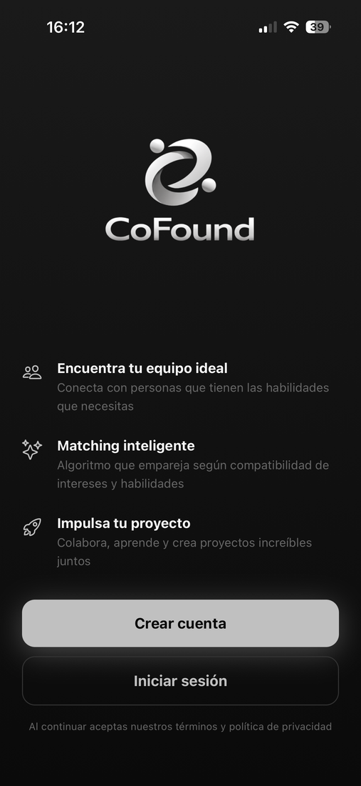
Fig. 01 — Welcome. Pantalla de bienvenida con logotipo, propuesta de valor y CTAs principales.
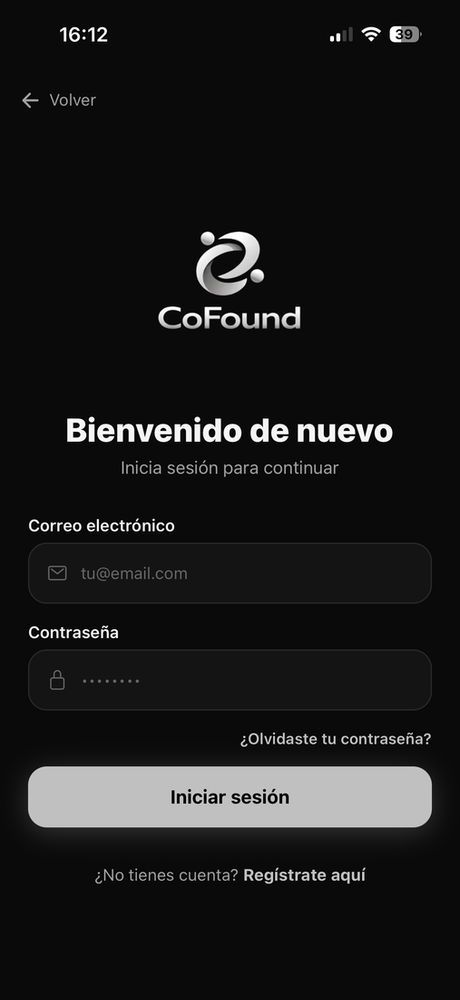
Fig. 02 — Login. Inicio de sesión con email + contraseña, validación inline y enlace a recuperación.
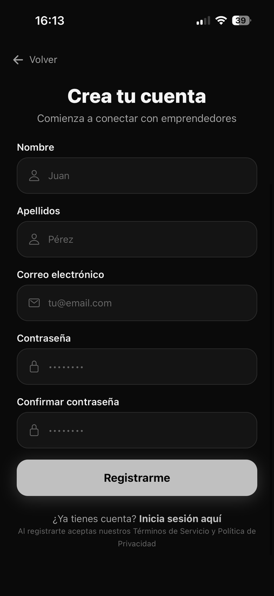
Fig. 03 — Registro. Alta con validación Zod cliente y servidor; mapea errores por campo.
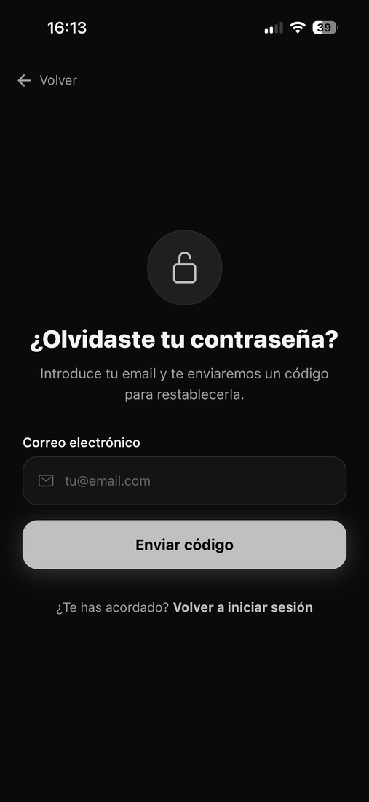
Fig. 04 — Recuperación de contraseña. Solicitud de código de 6 dígitos al correo registrado.
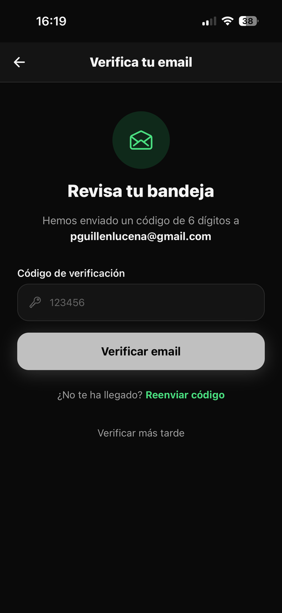
Fig. 05 — Verificación de email. Introducción del código de 6 dígitos enviado tras el registro.
VII.2 Wizard de creación de perfil (7 pasos)
Asistente de alta de perfil con barra de progreso y entrada animada por paso. Valida cada bloque antes de avanzar al siguiente y exige al menos tres fotos en el último paso.
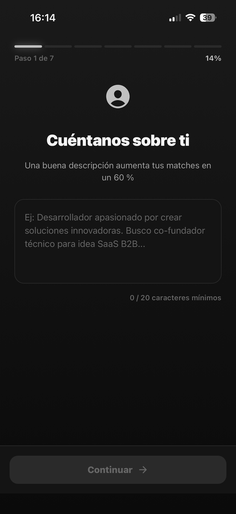
Fig. 06 — Paso 1/7: Bio. Descripción libre con contador y mínimo de 20 caracteres.
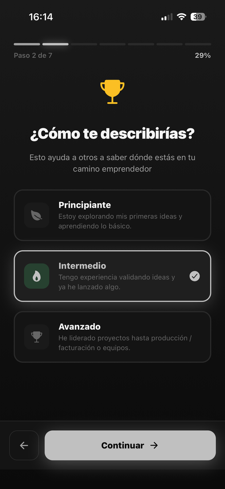
Fig. 07 — Paso 2/7: Nivel emprendedor. Selección única entre Principiante, Intermedio y Avanzado.
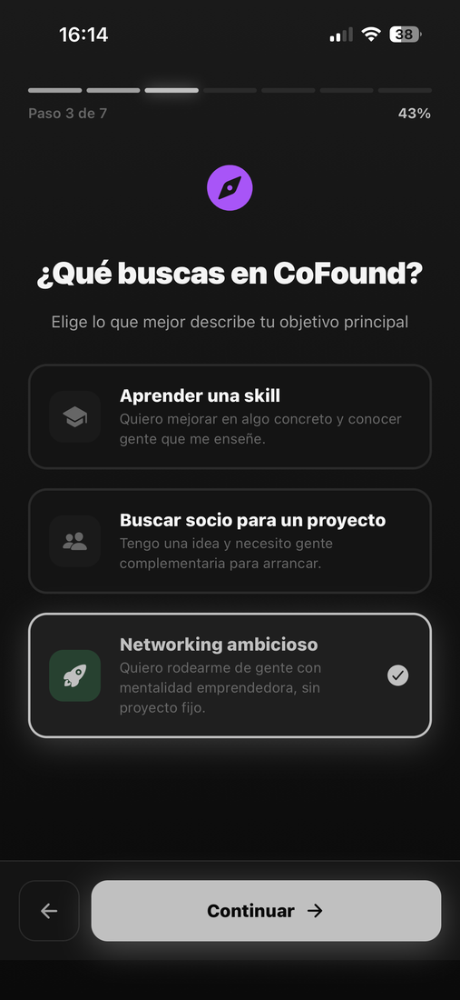
Fig. 08 — Paso 3/7: ¿Qué buscas? Aprender una skill, buscar socio o networking ambicioso.
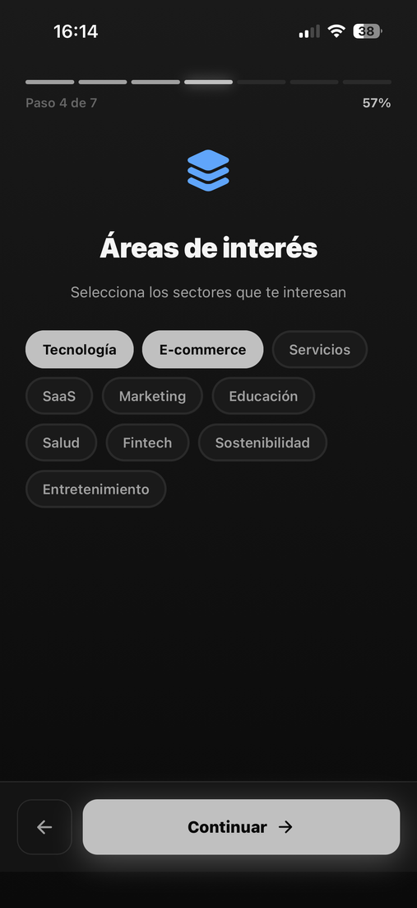
Fig. 09 — Paso 4/7: Áreas de interés. Selección múltiple en formato pills.
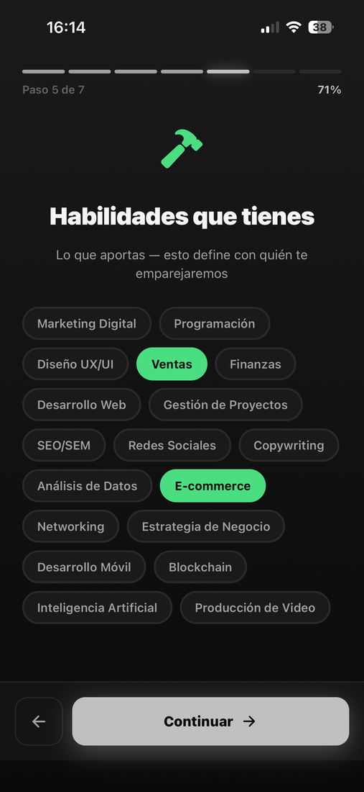
Fig. 10 — Paso 5/7: Habilidades que tienes. Lo que el usuario aporta al algoritmo de compatibilidad.
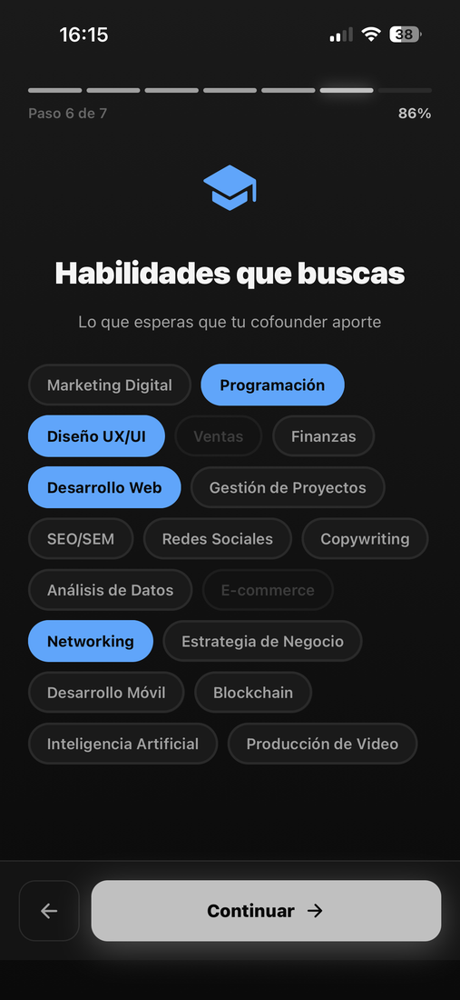
Fig. 11 — Paso 6/7: Habilidades que buscas. Lo que se espera del cofounder; bloquea las ya seleccionadas como propias.
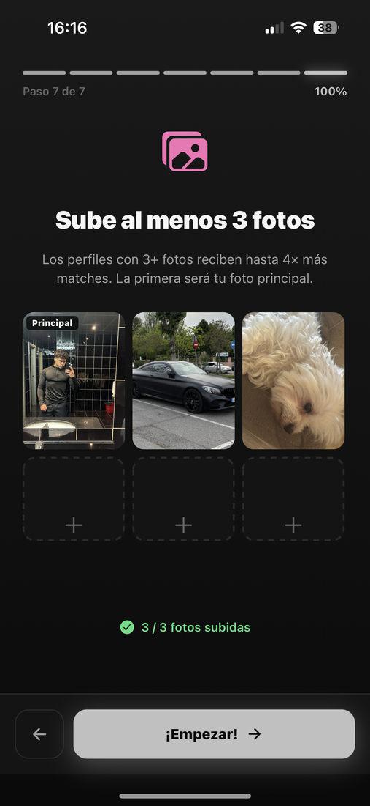
Fig. 12 — Paso 7/7: Fotos. Subida de un mínimo de 3 fotos; las casillas obligatorias destacan en color primario.
VII.3 Descubrimiento (núcleo de la app)
Feed de descubrimiento swipe con cálculo de compatibilidad por habilidades, badges de nivel y objetivo, gestos completos y modal de notificación al producirse un match.
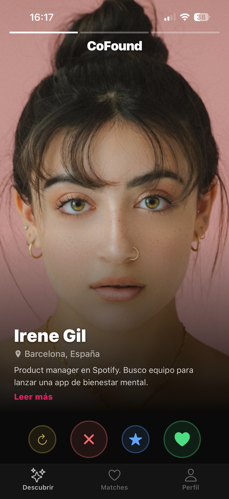
Fig. 13 — Card de descubrimiento. Foto, nombre, ubicación, % de compatibilidad y badges de nivel y objetivo.
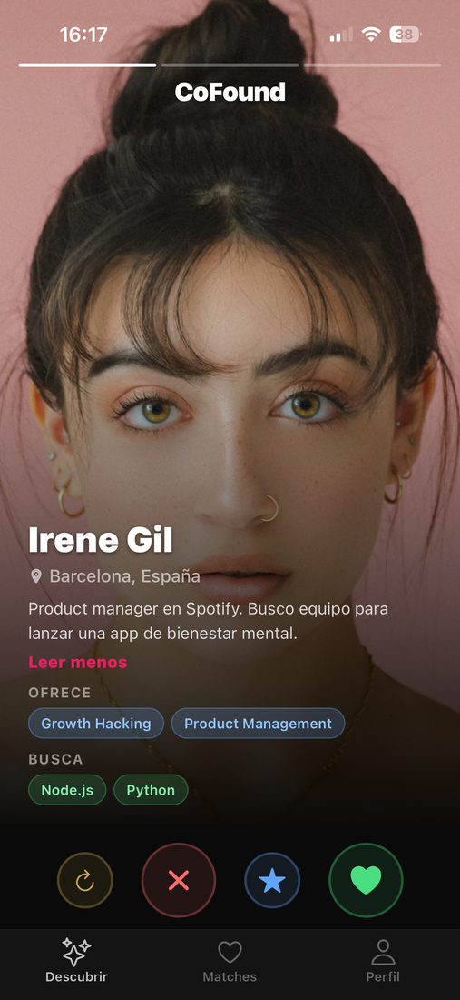
Fig. 14 — Bio expandida. Al pulsar "Leer más" se muestra la biografía completa y los bloques "Ofrece" y "Busca".
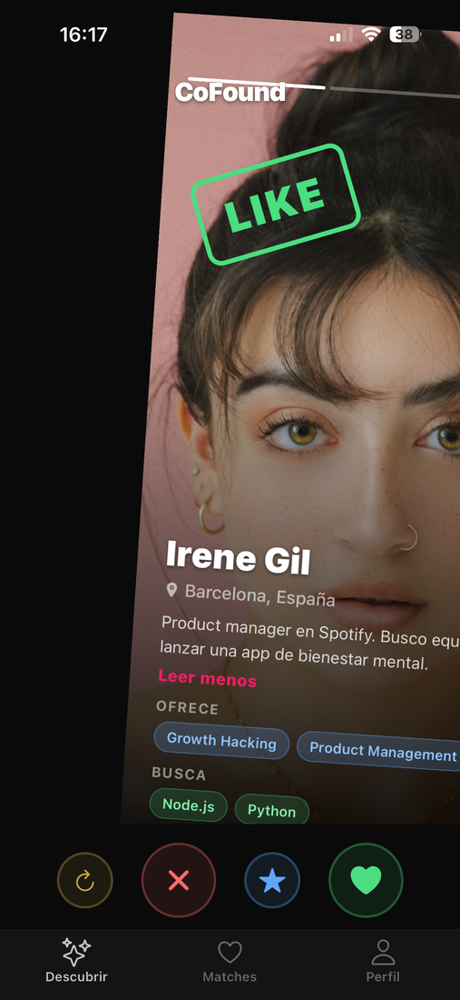
Fig. 15 — Swipe positivo. El sello "LIKE" verde aparece progresivamente al deslizar la card hacia la derecha.
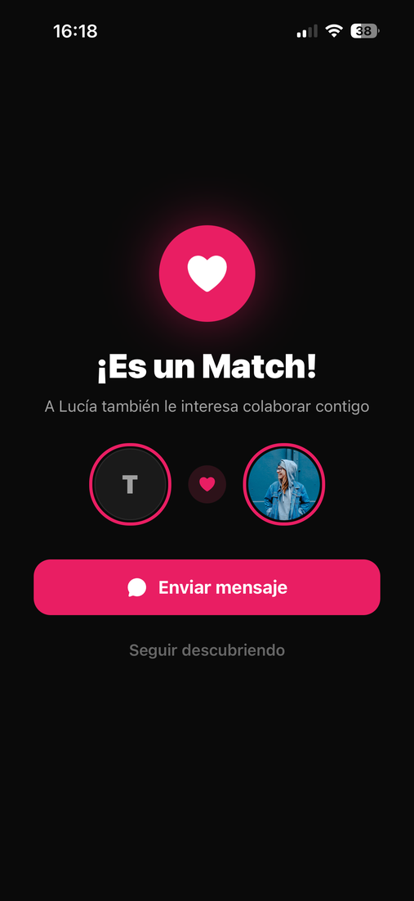
Fig. 16 — Modal de Match. Notificación full-screen al producirse like mutuo, con CTA al chat.
VII.4 Mensajería y perfil
Conversación con el match y vista del perfil propio del usuario, integrando los datos del wizard, fotos y enlaces a redes sociales.
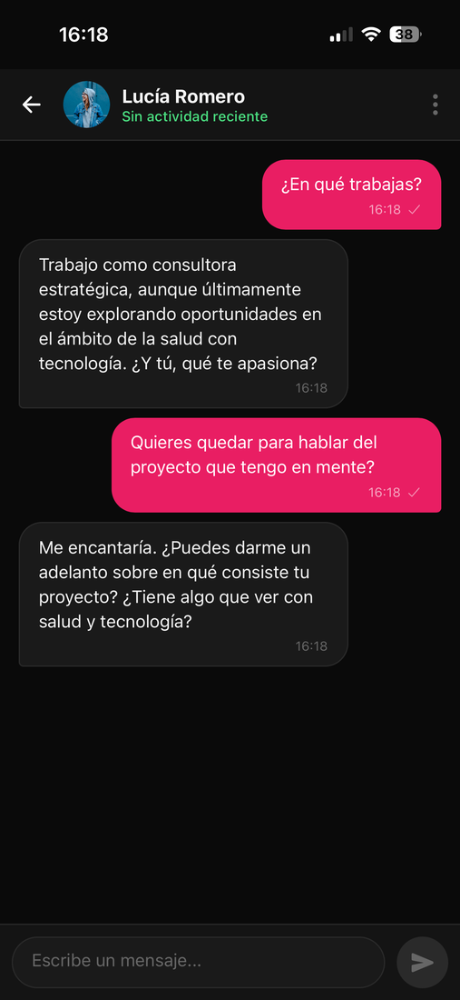
Fig. 17 — Chat con asistencia IA. Mensajería con respuestas generativas vía Groq + LLama 3.3-70B y estado de presencia real.
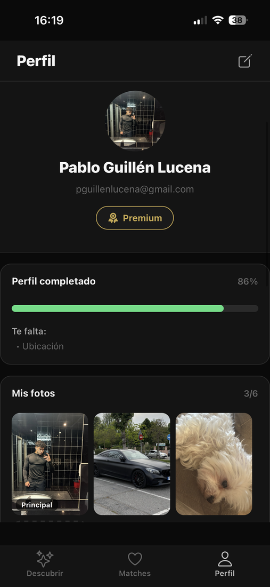
Fig. 18 — Perfil propio. Foto, badges de nivel y objetivo, redes sociales (LinkedIn / Instagram), barra de completitud y galería.
VII.5 Suscripción Premium
Flujo completo de monetización freemium: presentación de planes, pasarela de pago en modo demo (sin cargo real, modelo académico) y confirmación.
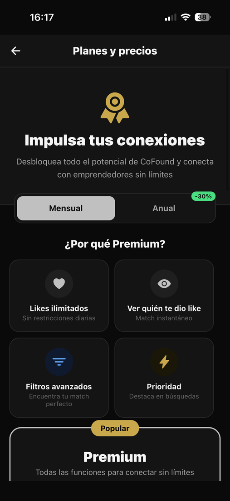
Fig. 19 — Planes y precios. Comparativa Free / Premium con toggle Mensual / Anual y catálogo de ventajas.
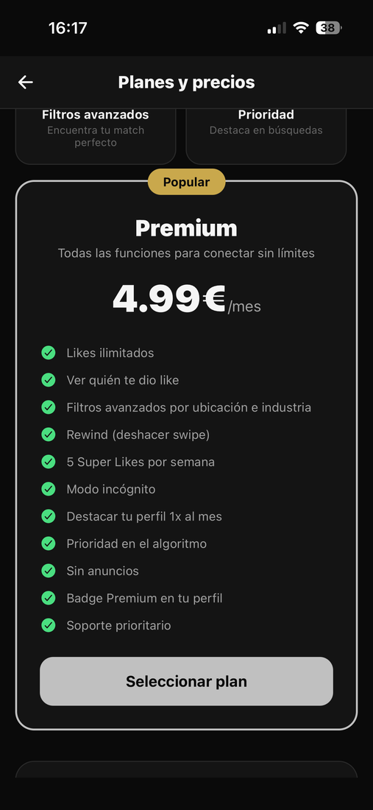
Fig. 20 — Pasarela de pago. Formulario simulado con banner explícito de "Modo demo" para fines académicos.
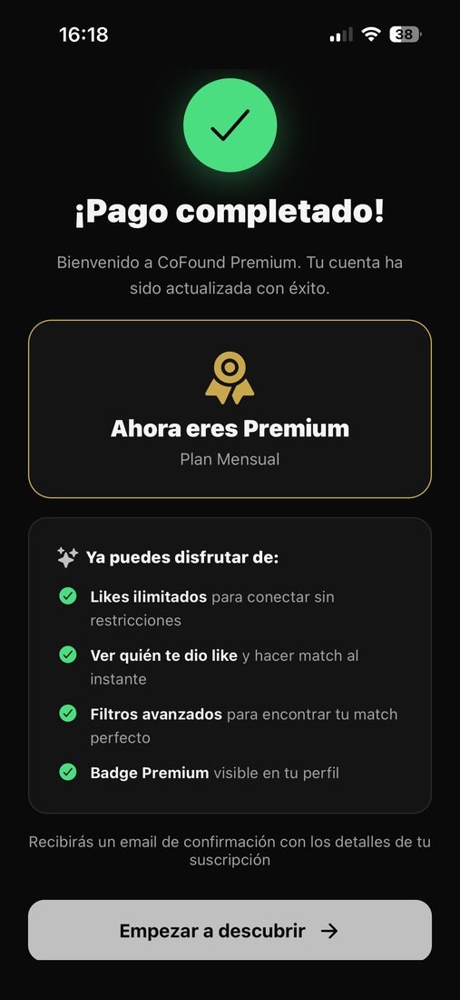
Fig. 21 — Confirmación de pago. Animación de check verde, resumen del plan activado y desbloqueo de funcionalidades Premium.
— Fin del documento —